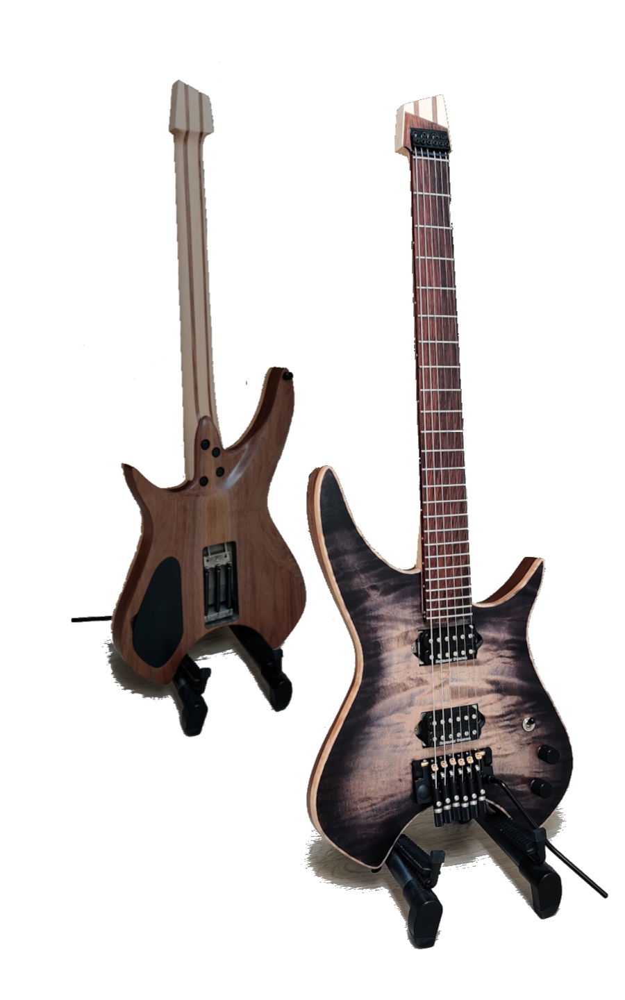
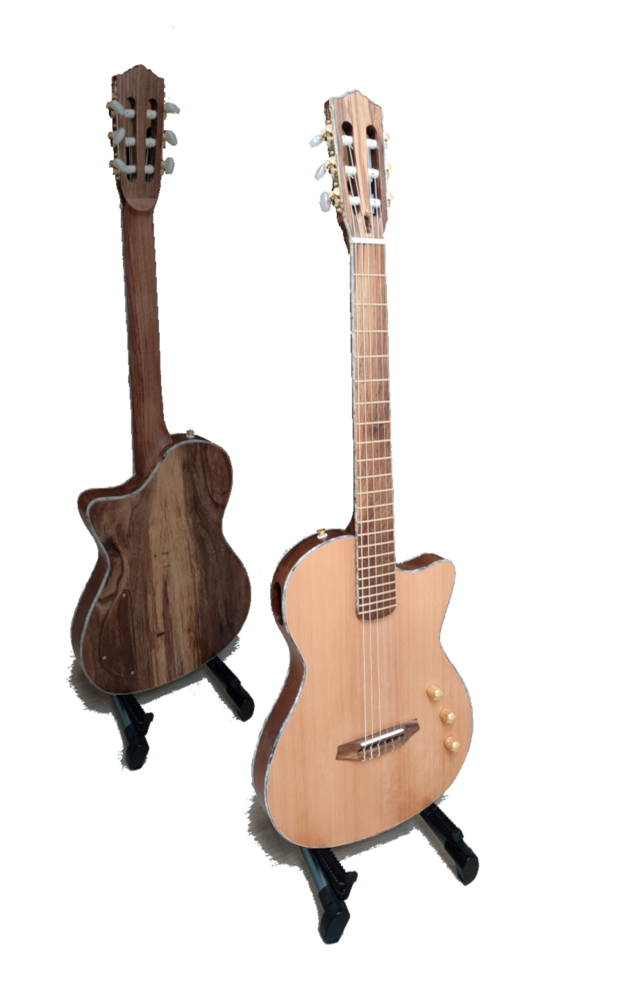
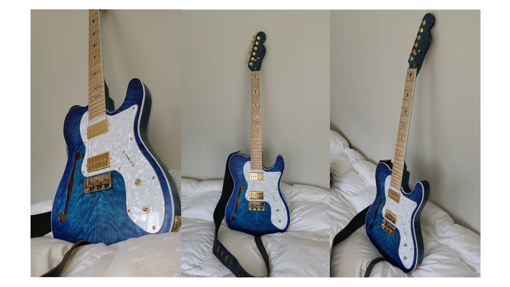
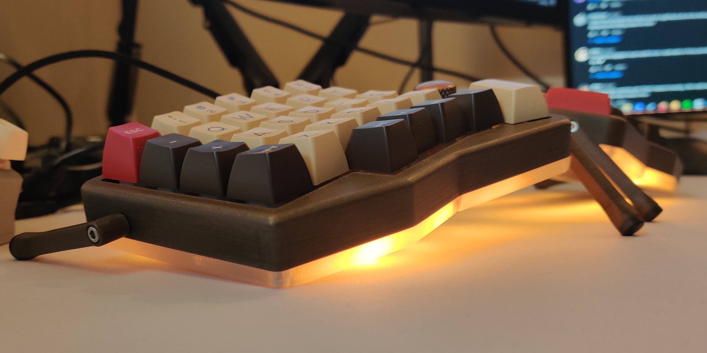
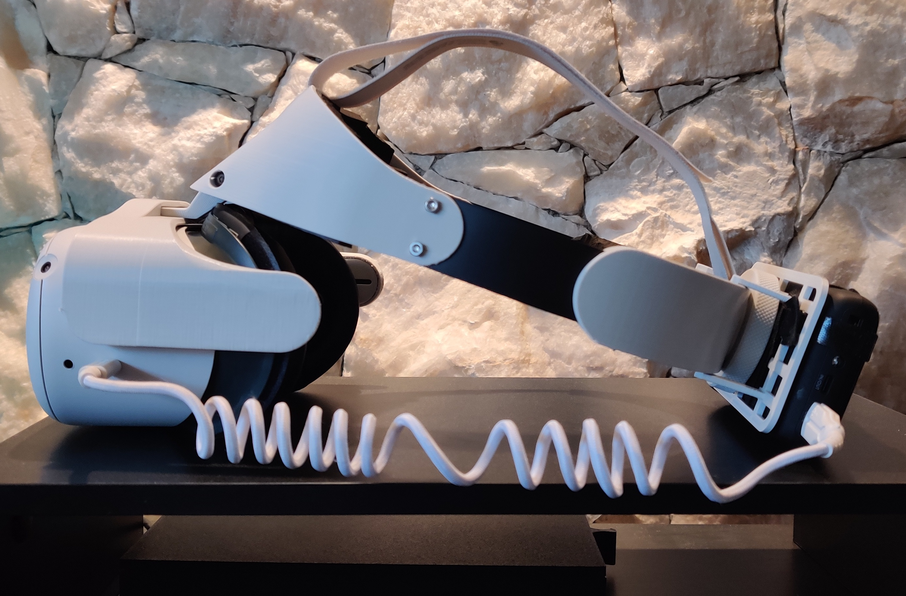

-
Custom Headless
Black Burst, Seymour Duncan Hot Rodded
Having built up some experience and leftover wood, I built another guitar. I chose to build a 24-fret headless guitar, loosely inspired by Strandberg. The result is an extremely lightweight guitar with a trem (credits to Nova Guitar Parts), built to shred!
This time around, the build much smoother, despite my choice of trying multiple new things, like bending a maple cap, building a 5 piece neck, hand-carving various contours etc.
SPECS
- Walnut Body
- 5-piece Maple/Walnut Neck
- Curly Maple Cap
- Seymour Duncan Hot Rodded Pickups
- Push-Pull Split-Coil and Phase Pots
- Nova Guitar Parts 6-String Headless Tremolo Bridge- Electric Guitar
- CAD
- 3D Printing
Jun '23 - Jul '23
 -
Custom ElectroNylon
Natural, Fishman Matrix
Inspired by Tim Henson's signature TOD10N, I started my second guitar build, and my first one from scratch. I had to learn a lot about woodworking, sharpening tools etc.
I might have sent it a bit hard, going for a more complex style of guitar. Admittedly, lots of things could be improved - the binding channels and binding overall being the biggest flaw, and I should've finished the body before gluing up the neck. Things would've been a lot harder if I didn't have a 3D printer to fab tools and templates as well.
Despite this, the guitar still ended up pretty decent, and most importantly feels great to play!
SPECS
Walnut Sides and Neck -
Claro Walnut Back, Fretboard and Headstock laminate -
Cedar Top -
Fishman Matrix Infinity Mic Blend Pickups -- Electric/Acoustic Guitar
- CAD
- 3D Printing
May '23 - Jun '23 -
 -
Custom Thinline Telecaster
Seaburst, P90s
My first try at building a guitar, helped by a pre-made kit. Lots of aesthetic imperfections, but all part of a learning process.
- Electric Guitar
July '19, revisited Jan '23
 -
Custom Sofle V2.1 RGB
Ergo-Split Keyboard
I got interested in Mechanical Keyboards around June '21, and when I finally got a 3D Printer to play around with, I decided to try designing a custom sandwich-mount case for the Sofle V2.1, complete with underglow lighting.
It went well enough, so I ended up building another for my brother!- Fusion 360
- 3D Printing
- Electronics
- CAD/CAM
Sept '21 - Dec '21
 -
Quest 2 Headstrap
Flip-Up, Halo
Whilst learning VR development, I grew tired of having to remove my headset completely every time I wanted to update code or change game configurations.
This led me to engineering a custom 3D-printable headstrap that conveniently flips up when I want to make changes at the desktop!- Fusion 360
- 3D Printing
- Engineering
- CAD/CAM
- Ergonomics
Jan '22 - Apr '22
